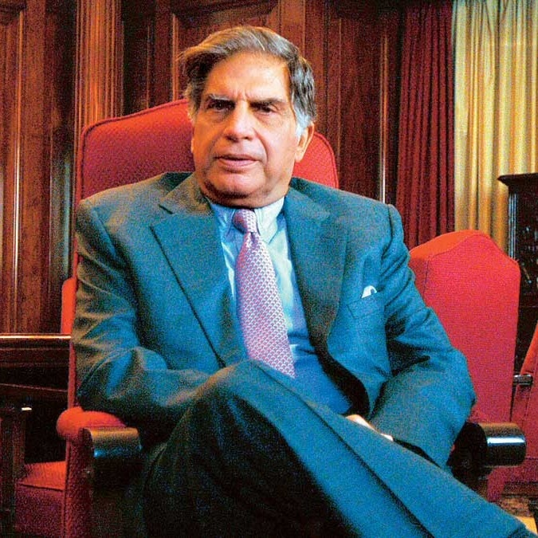

The Legacy Of Ratan Tata
Introduction
Ratan Tata is one of India’s most respected industrialists and philanthropists. As the former chairman of Tata Sons, he has played a pivotal role in shaping the Tata Group into a global powerhouse. His vision, humility, and commitment to ethical leadership have inspired millions, including myself.

Biography / Life Highlights
| Year/Period | Event / Achievement |
|---|---|
| 1937 | Born in Mumbai, India |
| 1962 | Graduated from Cornell University (Architecture & Structural Engineering) |
| 1962-1971 | Joined Tata Group, worked on the shop floor of Tata Steel |
| 1991 | Became Chairman of Tata Sons |
| 1998 | Launched Tata Indica, India’s first indigenous car |
| 2000 | Tata Tea acquired Tetley, marking Tata’s global expansion |
| 2008 | Tata Motors acquired Jaguar Land Rover |
| 2009 | Launched Tata Nano, the world’s cheapest car |
| 2012 | Retired as Chairman, became Chairman Emeritus |
| Philanthropy | Major contributions to education, healthcare, and rural development |
| Awards | Padma Bhushan (2000), Padma Vibhushan (2008), and numerous international honors |
| Died | 9 October 2024 (age 86 years), Breach Candy Hospital Trust, Mumbai |
Quotes
“I don’t believe in taking right decisions. I take decisions and then make them right.”
“None can destroy iron, but its own rust can! Likewise, none can destroy a person, but his own mindset can.”
“None can destroy iron, but its own rust can! Likewise, none can destroy a person, but his own mindset can.”
My Personal Thoughts
I deeply admire Ratan Tata for his visionary leadership and unwavering integrity. His ability to balance business success with social responsibility is truly inspiring. Ratan Tata’s humility, despite his immense achievements, teaches me the value of staying grounded. He has shown that true greatness lies in lifting others and making a positive impact on society